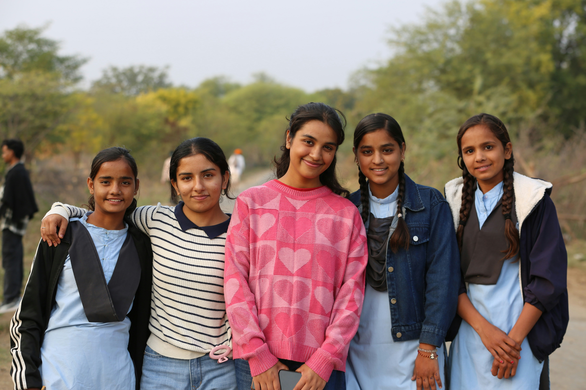

|
Key Facts What is HIV?HIV attacks the immune system. Without treatment, it can lead to AIDS, making the body unable to fight infections. How is HIV transmitted?Through unprotected sex, sharing needles, blood transfusions, or from mother to child during pregnancy, childbirth, or breastfeeding. How is it NOT transmitted?HIV is NOT spread by hugging, handshakes, sharing food, coughing, sneezing, mosquito bites, or toilet seats. Prevention MethodsUse condoms correctly, know your status (VCT), take PrEP if at high risk, and never share needles or syringes. Treatment (ART)Antiretroviral therapy keeps HIV undetectable. Undetectable = Untransmittable (U=U). People on ART live long, healthy lives. In RwandaOver 95% of people with HIV know their status. Treatment coverage is among the highest in Africa.
|
Lessons
1 Understanding HIV & AIDS ▼ HIV targets CD4 cells, which are key defenders of your immune system. Over time, if untreated, HIV destroys so many of these cells that the body can no longer fight off infections. This advanced stage is called AIDS. With modern treatment (ART), a person living with HIV can live as long as someone without HIV. 2 Transmission & Prevention ▼ HIV spreads through blood, semen, vaginal fluids, rectal fluids, and breast milk. Prevention: use condoms, avoid sharing injecting equipment, use PrEP if at risk, and test regularly. Pregnant women with HIV can take medicine to prevent passing it to their babies. 3 Testing & Knowing Your Status ▼ HIV tests are quick, confidential, and available at health centers across Rwanda. Early testing means earlier access to treatment. The window period (time from exposure to detectable positive) is usually 18–45 days depending on the test type. 4 Living with HIV – Treatment & Support ▼ People living with HIV who take ART daily can achieve an "undetectable" viral load — meaning they cannot transmit HIV to partners. ART is free in Rwanda. With treatment, good nutrition, and emotional support, people with HIV lead full, productive lives. 5 Fighting Stigma & Discrimination ▼ HIV stigma causes many people to avoid testing and treatment. Use respectful language (e.g., "person living with HIV" not "HIV victim"), educate others, and stand against discrimination. HIV does not define a person. |
Resources
Books & Guides
WHO HIV Guide 2023 Book / Official Report UNAIDS Resource Library Books & Reports Videos
HIV Education Videos YouTube – Documentary How HIV Works (Animation) YouTube – Science Articles
CDC HIV Basics Article – CDC Rwanda Biomedical Centre Local Health Authority Test Your Knowledge
Take the HIV Quiz Ubuzima Hub – Interactive |
|
Know HIV.
Protect Yourself. Live Fully. HIV (Human Immunodeficiency Virus) affects millions worldwide. With the right knowledge, you can protect yourself and others, reduce stigma, and support those living with HIV to lead healthy, full lives. 39M+ People living with HIV globally 630K HIV-related deaths in 2022 29.8M People on antiretroviral therapy 95% Target: Know your HIV status |

|
|
Your Mind
Matters Too. Mental health is just as important as physical health. Understanding emotions, stress, and mental conditions empowers you to seek help, support others, and build emotional resilience. 1 in 4 People affected globally 264M People with depression worldwide 75% Cases in low-income countries go untreated 14% Of Rwandans affected post-genocide |

|
|
Key Facts What is Mental Health?Mental health includes emotional, psychological, and social well-being. It affects how we think, feel, and act every day. Common ConditionsDepression, anxiety disorders, PTSD, bipolar disorder, and schizophrenia are among the most common mental health conditions. Warning SignsPersistent sadness, loss of interest, extreme mood swings, withdrawal from friends, changes in sleep or appetite, and difficulty concentrating. It's Okay to Seek HelpTalking to a counselor is a sign of strength, not weakness. Mental health support is available at health centers across Rwanda. Self-Care StrategiesRegular exercise, enough sleep, eating well, talking to friends, journaling, and mindfulness can all boost mental wellness. Rwanda ContextRwanda has integrated mental health into the national health system. Community health workers provide frontline support.
|
Lessons
1 What Is Mental Health? ▼ Mental health is a state of well-being where a person can cope with the normal stresses of life, work productively, and contribute to their community. It is not just the absence of illness — it is about thriving emotionally, socially, and psychologically. 2 Stress & Anxiety ▼ Stress is a normal response to challenges, but chronic stress can harm your body and mind. Anxiety involves excessive worry that is hard to control. Deep breathing, exercise, talking to someone, and relaxation techniques can help manage both. 3 Depression: More Than Sadness ▼ Depression is a medical condition — not laziness or weakness. Symptoms include persistent sadness, loss of interest, fatigue, changes in appetite and sleep, and sometimes thoughts of self-harm. Depression is treatable through therapy, medication, or both. 4 Trauma & PTSD ▼ PTSD can develop after experiencing a traumatic event. In Rwanda, many people carry trauma from the 1994 genocide. Symptoms include flashbacks, nightmares, emotional numbness, and hypervigilance. Trauma-informed counseling is highly effective. 5 How to Support Someone ▼ If someone you know is struggling: listen without judgment, do not minimize their feelings, encourage them to seek help, and stay connected. Avoid saying "just cheer up." Simply being present and caring can make a huge difference. |
Resources
Books & Guides
WHO Mental Health Resources Books & Guides Minds for Life Youth Mental Health Guide Videos
Mental Health in Africa YouTube – Documentary Managing Anxiety – Youth YouTube – Educational Articles
WHO Mental Disorders Fact Sheet Article – WHO Test Your Knowledge
Take the Mental Health Quiz Ubuzima Hub – Interactive |
|
Know Your Body.
Own Your Health. Menstrual health is a fundamental part of every girl's and woman's life. Understanding your cycle, hygiene, and rights helps you stay healthy, confident, and empowered. 500M+ Women lack menstrual resources globally 28 days Average menstrual cycle length 1 in 10 Girls miss school during period 3–7 Days a period typically lasts |
 |
|
Key Facts What is Menstruation?Menstruation is the monthly shedding of the uterine lining when pregnancy has not occurred. It is a normal, healthy biological process. First Period (Menarche)Girls usually get their first period between ages 10–16. A period lasting 3–7 days every 21–35 days is considered normal. Hygiene ProductsOptions include pads, tampons, menstrual cups, and reusable cloth pads. Change pads every 4–6 hours to prevent infection. Managing CrampsMild cramps are normal. Warm compresses, light exercise, and hydration help. Severe pain should be evaluated by a doctor. Period Problems to WatchSee a health professional if you have very heavy bleeding, periods lasting more than 7 days, or no periods after age 16. Menstruation is Not ShamefulPeriods are natural. Breaking taboos and open conversations reduce stigma and help girls stay in school and thrive.
|
Lessons
1 The Menstrual Cycle Explained ▼ The menstrual cycle is controlled by hormones (estrogen and progesterone). It has four phases: menstruation, follicular phase, ovulation, and luteal phase. Understanding these phases helps you predict your period, track fertility, and understand mood and energy changes throughout the month. 2 Menstrual Hygiene Management ▼ Good menstrual hygiene means using clean materials to absorb blood, changing them every 4–6 hours, washing hands before and after changing, and properly disposing of used materials. Poor hygiene can lead to infections like bacterial vaginosis or urinary tract infections. 3 Premenstrual Syndrome (PMS) ▼ PMS refers to physical and emotional symptoms in the days before a period: bloating, breast tenderness, mood swings, irritability, and food cravings. Healthy eating, regular exercise, reducing caffeine and salt, and adequate sleep can reduce PMS symptoms significantly. 4 Nutrition & the Menstrual Cycle ▼ Iron-rich foods (beans, dark leafy greens, meat) help replace iron lost during menstruation. Staying hydrated reduces bloating. Calcium and magnesium found in dairy, nuts, and seeds can reduce cramps. Avoid excessive sugar and processed foods during your period. 5 Menstrual Health & School Attendance ▼ Lack of pads, private toilets, and pain management causes many girls to miss school. Rwanda has made progress through programs providing free sanitary products. Advocating for menstrual health in schools keeps girls in education and on track for their futures. |
Resources
Books & Guides
UNFPA Menstrual Health Guide Book – UNFPA UNICEF Menstrual Hygiene Official Guide Videos
Menstrual Cycle Animation YouTube – Science Period Hygiene in Africa YouTube – Education Articles
WHO Menstrual Health Facts Article – WHO Test Your Knowledge
Take the Menstrual Health Quiz Ubuzima Hub – Interactive |
|
Know the Risk.
Protect Your Future. STDs are infections passed through sexual contact. Most are preventable and treatable. Knowledge is your strongest protection — for yourself and for others. 1M+ New STIs acquired every day globally 374M New curable STIs per year (WHO) 4 Most common curable STIs 30+ Pathogens known to cause STIs
|
|
Key Facts What are STDs/STIs?STDs are spread mainly through sexual contact. They can be caused by bacteria, viruses, or parasites. Common STIsChlamydia, gonorrhea, syphilis, herpes (HSV), HPV, and HIV are among the most common STIs worldwide. Many Have No SymptomsMany STIs have no visible symptoms. You can have one and not know it — which is why regular testing is important. PreventionUse condoms consistently and correctly. Limit sexual partners. Get vaccinated (HPV and hepatitis B). Know your status. TreatmentBacterial STIs (chlamydia, gonorrhea, syphilis) are curable with antibiotics. Viral STIs can be managed with treatment. Testing in RwandaFree STI testing is available at health centers. VCT centers are widespread across Rwanda.
|
Lessons
1 Common STIs and Their Causes ▼ STIs are caused by bacteria (chlamydia, gonorrhea, syphilis), viruses (HIV, herpes, HPV, hepatitis B), and parasites (trichomoniasis, pubic lice). Each type requires different treatment. Bacterial STIs respond to antibiotics; viral STIs require antiviral medication and ongoing management. 2 Symptoms and Warning Signs ▼ Warning signs include: unusual discharge from the genitals, burning during urination, sores or blisters on genitals or mouth, rashes, pain during sex, and swollen lymph nodes. However, many STIs are completely asymptomatic — regular testing is the only reliable way to know your status. 3 How STIs Are Transmitted ▼ STIs spread through vaginal, anal, and oral sex; sharing sex toys; skin-to-skin genital contact (herpes, HPV); and through blood (HIV, hepatitis B). Mother-to-child transmission during pregnancy or childbirth is also possible. They are NOT spread through casual contact like hugging or sharing food. 4 Testing & Getting Help ▼ Getting tested regularly is an act of responsibility and self-care. Testing is confidential and non-judgmental. In Rwanda, health centers offer free STI testing. If diagnosed, take the full course of treatment and inform recent partners so they can also get tested. 5 Prevention & Safer Sex ▼ Prevention includes using condoms every time you have sex, knowing your partner's STI status, reducing the number of sexual partners, avoiding sharing needles, and getting vaccinated against HPV and hepatitis B. When used correctly and consistently, condoms are highly effective at preventing STI transmission.
|
Resources
Books & Guides
WHO STI Fact Sheet Official Guide CDC STI Guide for Youth Book – CDC Videos
STI Education Animation YouTube – Educational Correct Condom Use YouTube – Tutorial Articles
CDC STD Information Center Article – CDC Test Your Knowledge
Take the STDs Quiz Ubuzima Hub – Interactive |
|
Lifestyle Choices
Shape Your Health. Non-communicable diseases like diabetes, hypertension, cancer, and heart disease are the world's biggest killers. They are not passed person to person — but your daily choices can prevent or manage them. 74% Of global deaths caused by NCDs 41M People die from NCDs annually 77% NCD deaths in low/middle income countries 4 Main risk factors: tobacco, alcohol, bad diet, inactivity |

|
|
Key Facts What are NCDs?Non-communicable diseases are chronic conditions not caused by infectious agents. They develop over time due to genetic, environmental, or lifestyle factors. Major NCDsThe four main NCDs are cardiovascular diseases, cancers, chronic respiratory diseases, and diabetes — accounting for over 80% of NCD deaths. Key Risk FactorsTobacco use, physical inactivity, unhealthy diet (high sugar, salt, fat), and harmful use of alcohol are the main modifiable risk factors. Prevention is PossibleUp to 80% of heart diseases, strokes, and type 2 diabetes, and over a third of cancers, could be prevented by healthy lifestyle choices. NCDs in RwandaHypertension, diabetes, and cardiovascular disease are increasingly common in Rwanda. Community health insurance (Mutuelle) covers NCD treatment. Early Warning SignsHigh blood pressure often has no symptoms. Watch for: excessive thirst, frequent urination (diabetes), chest pain, or persistent cough. |
Lessons
1 Understanding NCDs ▼ Unlike infectious diseases, NCDs are not caused by germs you catch from other people. They develop due to a combination of genetic predisposition and lifestyle factors over many years. Common NCDs include heart disease, stroke, cancer, diabetes, asthma, and chronic kidney disease. Many NCDs are silent for years before symptoms appear. 2 Hypertension (High Blood Pressure) ▼ Hypertension is called the "silent killer" because it often has no symptoms but dramatically increases the risk of heart attack and stroke. It can be controlled with lifestyle changes (less salt, more exercise, no smoking) and medication when necessary. Regular blood pressure checks are vital. 3 Diabetes: Types and Management ▼ Type 1 diabetes is an autoimmune condition where the pancreas produces no insulin. Type 2 diabetes (far more common) develops when the body cannot use insulin properly, often linked to obesity and inactivity. Management includes a healthy diet, exercise, weight control, and medication or insulin when necessary. 4 Cancer Awareness & Prevention ▼ Common cancers in Rwanda include cervical, breast, prostate, and colorectal cancer. HPV vaccination prevents most cervical cancers. Early screening (Pap smear, breast self-exam) saves lives. Prevention: avoid tobacco, limit alcohol, eat plenty of fruits and vegetables, stay physically active, and attend regular screenings. 5 Healthy Lifestyle for NCD Prevention ▼ The best medicine for NCDs is prevention: eat a balanced diet rich in vegetables, fruits, and whole grains; exercise for at least 30 minutes most days; avoid tobacco in any form; limit alcohol; manage stress; and get regular health screenings. Small, consistent habits adopted early in life reduce NCD risk dramatically in adulthood. |
Resources
Books & Guides
WHO NCDs Fact Sheet Official Guide International Diabetes Federation Guide Book – IDF Videos
NCDs Explained YouTube – Educational Diabetes & Hypertension in Africa YouTube – Documentary Articles
WHO NCDs Topic Hub Article – WHO RBC NCD Program Rwanda Local Health Authority Test Your Knowledge
Take the NCDs Quiz Ubuzima Hub – Interactive |